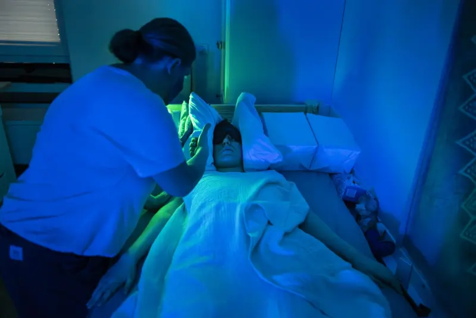
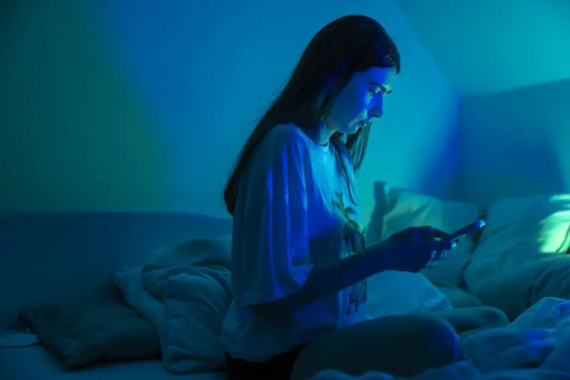
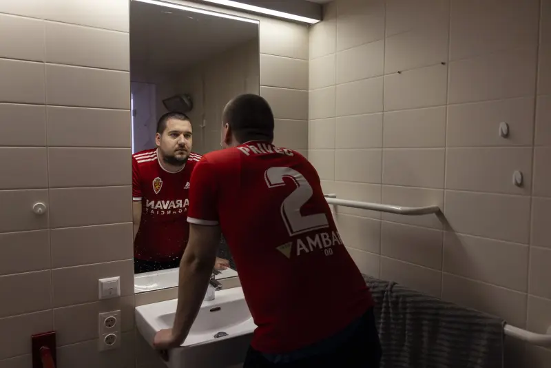

ME/CFSThe gap
ME/CFS is a neuroimmunological disease. It usually begins after an infection and is classified by the WHO under G93.3. Its key symptom is post-exertional malaise: after even small exertion, all symptoms get worse. At its most severe, people are bedbound.
In Austria: number of people affected, tbc. Housebound or bedbound: share tbc.
Before 2024 there was no biomarker and no approved treatment, and hardly any competitive funding. Until then, the FWF had funded one ME/CFS project.
Before 2024
€0funding
0projects
0fellows
0biomarkers
0treatments
Three lives

Mila Hermissonfalls ill · 2018She played the cello. Today she lies in a dark room, cared for by her parents.her storyPhoto: Brent Stirton · licence tbc

Carmen Rinnhoferfalls ill · 2022She speaks four languages. Since 2022 she has not left the house.her storyPhoto: Brent Stirton · licence tbc

Martin Privecfalls ill · 2017Four years in bed. Today he plays basketball again, for a few minutes.his storyPhoto: Brent Stirton · licence tbc
Summary +
- ME/CFS: neuroimmunological, usually after an infection, key symptom PEM.
- Three people, three years in which nothing was there for them.
- Before 2024: no biomarker, no treatment, one FWF project.